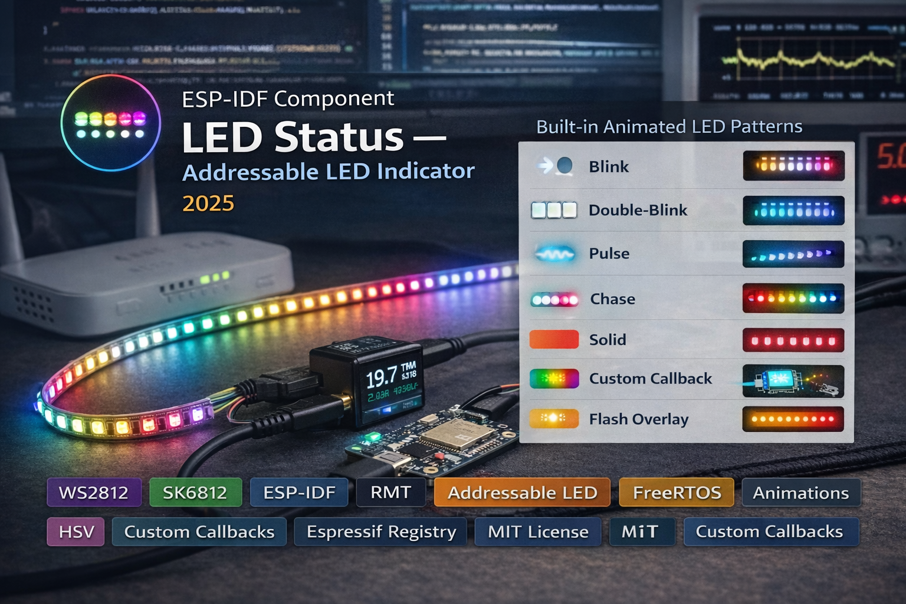

Flexible WS2812/SK6812/WS2811 LED status indicator component for ESP-IDF. 22-function API with 8 built-in animated patterns (blink, pulse, chase, double-blink), custom animation callbacks, timed display with auto-revert, flash overlay, global brightness scaling, HSV color utilities, and per-pixel control - all driven by a non-blocking FreeRTOS background task.

The component runs all animations in a dedicated FreeRTOS background task, so calling led_status_set(LED_STATUS_PULSE, LED_COLOR_BLUE) returns immediately and never blocks the application. Pattern state is protected by a mutex, and the flash override uses a volatile flag for low-latency lock-free signaling. The task supports core pinning on dual-core chips via the config struct.
Eight built-in patterns cover common status indicator needs: solid, slow blink (1 Hz), fast blink (5 Hz), double-blink, smooth sine-wave pulse with squared gamma correction for perceptual linearity, and a chase animation with a 2-level fading trail (25% and 6.25% brightness) that gracefully degrades to pulse on single-LED strips. All timing parameters (blink period, pulse cycle, chase step) are configurable per-instance.
Beyond the built-in patterns, you can register a custom callback via led_status_set_custom_callback() that gets full per-pixel control. The callback receives the LED count, a user context pointer, and returns the delay until the next frame (clamped 10–1000ms). The included example project demonstrates three custom patterns: rainbow cycle (HSV hue rotation across LEDs), color wipe (sequential fill with rotating colors), and theater chase (marquee with rotating hue).
led_status_flash() provides a non-blocking flash overlay - it temporarily shows a color for a specified duration then automatically restores the previous pattern state. This is useful for feedback (e.g., flash green on successful WiFi connect) without disrupting the current status animation. The timed display functions (led_status_show_timed()) are similar but auto-revert to off instead of the previous state.
The entire component is a single led_status.c (~450 lines) with a single header (~250 lines, fully Doxygen-documented). Global brightness is applied per-channel via (value * brightness) / 255 before reaching hardware. The HSV-to-RGB utility supports full 0–360 hue range. Resource cleanup in led_status_deinit() deletes the task, frees the mutex, clears and deletes the LED strip handle, and resets all state. The header includes extern "C" guards for C++ compatibility.